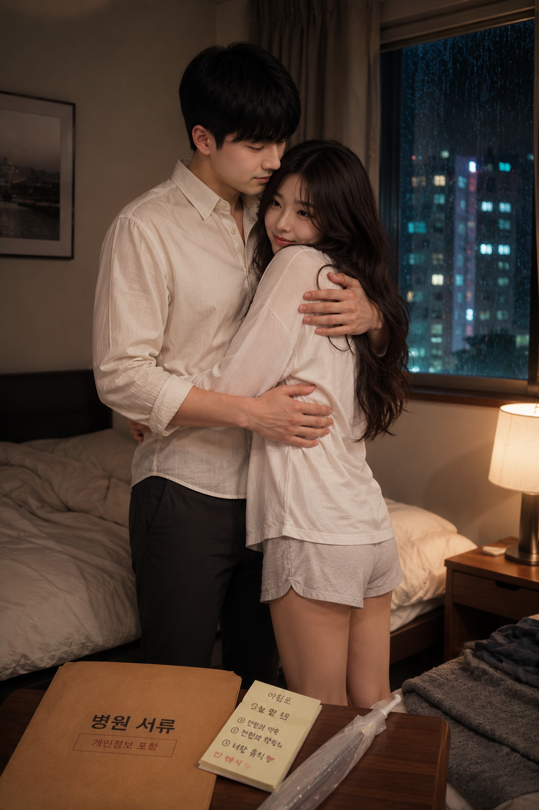

부산 일정 마지막 날, 오전부터 흐리던 하늘은 저녁 무렵이 되자 비를 조금씩 떨어뜨리기 시작했다. 팝업 마감 정산까지 끝내고 나자 하린은 회사 쪽 보고 전화를 붙잡아야 했고, 소율은 병원에서 받아 온 서류 봉투를 무릎 위에 올린 채 한참 말이 없었다. 시안은 택시를 불러 둘을 숙소 앞으로 먼저 보냈고, 자신은 행사장 문단속을 마지막으로 확인한 뒤 늦게 합류했다.
방 안에는 젖은 우산 냄새와 따뜻한 컵라면 국물 냄새가 함께 감돌고 있었다. 하린은 회사 메일을 마저 보내야 한다며 공용 라운지 쪽으로 나갔고, 소율은 조용해진 방 안에서 병원 서류를 한 장씩 다시 넘겼다. 빽빽한 일정표 중간중간에 `추가 경과 관찰`, `재조정 가능` 같은 문장이 들어갈 때마다 그녀의 손끝이 조금씩 느려졌다.
시안은 맞은편에 앉아 그 손을 한동안 지켜보다가, 결국 서류 뭉치를 부드럽게 덮었다.
김시안"그만 봐."
임소율"한 번만 더 보면 정리될 것 같아서."
김시안"안 돼."
소율은 고집을 부릴 듯 입술을 열었다가, 시안 눈을 보고 결국 말문을 닫았다. 그 대신 그녀는 서류 위에 올려 둔 자기 손을 빼지 못한 채 그대로 물었다.
임소율"오늘 하린 씨 어땠어?"
김시안"잘했어."
임소율"응. 나도 그렇게 생각해."
소율은 이상하게 웃었다. 칭찬하면서도 마음 한구석이 편하지 않다는 걸 감추지 않는 표정이었다. 시안은 그녀 맞은편 의자를 밀어 가까이 앉았다.
김시안"그래서 지금 뭐가 제일 복잡한데."
임소율"다."
짧은 대답 뒤에 소율은 결국 서류에서 손을 떼고 얼굴을 감쌌다. 환하게 웃는 사람이 숨이 막힐 때 습관처럼 하는 동작이었다.
임소율"엄마 일정도 그렇고, 서울 올라가면 또 어떻게 굴려야 할지도 그렇고... 하린 씨가 생각보다 너무 잘 버텨서 그것도 그렇고."
김시안"그중에 제일 먼저 정할 건?"
임소율"내 자리 안 접는 거."
시안은 고개를 끄덕였다. 소율은 손을 내린 뒤 이번에는 곧장 그의 눈을 봤다. 계속 흔들리지만, 도망치지 않는 눈이었다.
임소율"오빠."
김시안"응."
임소율"나 인정할 건 인정할게. 하린 씨, 그냥 어리고 기대는 애 아니었어."
김시안"응."
임소율"근데 그거랑 별개로, 내가 오래된 사람이라는 것도 더 분명했으면 좋겠어."
그 말은 떼쓰는 요구가 아니라, 자기 관계의 결을 분명히 남기고 싶다는 쪽의 바람이었다. 시안은 손을 뻗어 소율의 무릎 위에 올려 둔 서류 봉투를 치우고, 그 대신 그녀의 손가락을 하나씩 펴 잡았다.
김시안"그건 네가 이미 하고 있어."
임소율"그래도 오늘은 더 확인받고 싶어."
김시안"받아."
소율은 눈을 천천히 감았다 떴다. 그리고 이번에는 먼저 자리에서 일어나 시안 앞으로 한 걸음 걸어왔다. 그는 자연스럽게 소율의 허리를 받아 끌어당겼고, 그녀는 망설임 없이 그의 어깨에 손을 얹었다. 비가 창문을 얇게 두드리는 소리 사이로, 둘의 숨이 점점 가까워졌다.
임소율"부산에 있어도, 나 서울 쪽 사람인 거 잊지 마."
김시안"안 잊어."
임소율"오빠 생활도."
김시안"네가 먼저 안 놔버리면."
소율은 그 말에 조금 울 것 같은 얼굴로 웃었다. 그 웃음이 무너지기 전에 시안이 먼저 입을 맞췄고, 그녀는 곧장 그의 셔츠 소매를 끌어쥐었다. 몸이 겹쳐지는 속도는 빨랐지만, 흐름은 전혀 조급하지 않았다. 불안 때문에 매달리는 게 아니라, 자기 시간이 여기까지 이어져 있다는 걸 분명히 남기려는 쪽의 움직임이었다.

창밖 빗소리가 방 안의 정적을 얇게 채우고 있었다. 소율은 시안의 셔츠 소매를 쥔 손을 풀지 않았다. 그녀의 손가락이 천을 꼭 움켜쥔 채, 숨을 한 번 깊게 들이마셨다. 젖은 공기와 따뜻한 실내 온도가 뒤섞인 경계에서, 소율의 눈동자가 조금 더 젖어 들어갔다.
임소율"오빠."
김시안"응."
임소율"나 지금 좀... 확인하고 싶어."
시안은 대답 대신 그녀의 허리를 더 깊이 끌어당겼다. 소율의 몸이 그의 품 안으로 완전히 밀려 들어왔고, 그녀의 가슴이 그의 가슴께에 단단히 닿았다. 얇은 긴팔 티셔츠 너머로 그녀의 체온이 빠르게 올라붙는 게 느껴졌다. 소율은 시안의 어깨에 얼굴을 묻은 채 낮게 웃었다.
임소율"부산 내내... 이런 거 생각 안 하려고 했는데."
김시안"됐어. 지금 하면 돼."
그가 고개를 숙여 그녀의 관자놀이에 입을 맞췄다. 소율의 숨결이 가늘게 떨렸다. 시안의 입술은 그대로 그녀의 눈꺼풀 위를 스치고, 콧등을 지나, 볼에 닿았다. 소율은 눈을 감은 채 그의 목덜미에 손을 얹었다. 손끝이 그의 뒷머리카락을 더듬으며 파고들었다.
김시안"소율아."
임소율"응..."
김시안"여기서 도망갈 생각 없어."
그 말에 소율의 눈꺼풀이 파르르 떨렸다. 그녀가 고개를 들자, 시안은 더 이상 기다리지 않고 입을 맞췄다. 처음은 부드러웠다. 아랫입술을 살짝 물듯이 포개고, 그녀의 입술이 열리기를 기다리는 느낌이었다. 소율은 짧은 신음을 내며 입을 열었고, 시안의 혀가 그 틈새로 천천히 밀고 들어왔다.
"으응..."
소율의 목구멍에서 작은 소리가 새어 나왔다. 시안의 혀가 그녀의 입천장을 쓸고, 잇몸 안쪽을 핥고, 그녀의 혀를 감아 올렸다. 따뜻하고 젖은 감촉이 입 안 가득 퍼졌다. 소율은 그의 셔츠를 더 세게 움켜쥐었고, 시안은 그녀의 허리를 감싼 손에 힘을 주어 침대 쪽으로 천천히 밀고 갔다.
침대 매트리스가 살짝 꺼지며 소율의 무릎 뒤가 모서리에 닿았다. 시안은 입맞춤을 멈추지 않은 채 그녀를 침대 위로 눕혔다. 소율의 웨이브 머리카락이 흰 침대 커버 위로 흩어졌다. 시안은 그녀 위로 몸을 기울이며 한 손으로 그녀의 티셔츠 밑단을 더듬었다.
김시안"팔 들어."
소율은 말없이 두 팔을 올렸다. 시안이 티셔츠를 끌어올리자 그녀의 배와 갈비뼈 아래가 드러났다. 실내등 불빛이 그녀의 살결 위로 부드럽게 번졌다. 소율은 숨을 가쁘게 쉬며 시안의 손길을 기다렸다. 티셔츠가 완전히 벗겨져 침대 옆으로 떨어졌다.
시안은 잠시 멈춰 그녀를 내려다봤다. 소율의 상체는 브래지어만 남은 채였다. 건강하게 살이 오른 어깨와 쇄골 라인이 부드럽게 이어졌고, 브래지어 위로 살짝 눌린 가슴 위쪽이 가쁜 숨결에 따라 오르내렸다. 그녀는 평소 밝은 표정과 달리 지금은 입술을 살짝 깨문 채 시안의 시선을 받아내고 있었다. 부끄럽지만 도망치지 않는 눈이었다.
임소율"보기만 하지 마..."
김시안"보고 있어."
그가 손을 뻗어 그녀의 쇄골을 따라 손가락을 쓸었다. 소율의 어깨가 살짝 움츠러들었다. 시안의 손가락은 그대로 브래지어 끈을 타고 내려가 가슴 위쪽을 더듬었다. 천을 통해 느껴지는 탄력이 손바닥에 전해졌다. 그는 한 손으로 그녀의 가슴을 감싸 쥐고 천천히 주물렀다.
"하아..."
소율의 입에서 뜨거운 숨이 새어 나왔다. 시안은 그녀의 브래지어 뒤쪽 호크에 손을 대고 한 번에 풀었다. 끈이 느슨해지며 가슴이 드러났다. 소율의 가슴은 브래지어가 벗겨지자 더 풍만하게 퍼졌다. 둥글고 단단한 언덕 위로 옅은 갈색 유두가 살짝 돋아 있었다. 시안은 곧바로 손바닥으로 그녀의 왼쪽 가슴을 감쌌다. 손가락 사이로 살이 부드럽게 밀려 나왔다.
김시안"예뻐."
임소율"그런 말... 하지 마... 부끄러워..."
소율이 팔로 얼굴을 가리려 했지만, 시안이 그 손목을 부드럽게 제지했다. 그는 고개를 숙여 그녀의 오른쪽 유두에 입을 맞췄다. 입술로 살짝 물고, 혀끝으로 톡톡 건드렸다. 소율의 몸이 침대 위에서 살짝 들썩였다.
"응...!"
시안은 그 반응을 즐기듯 혀를 더 넓게 사용했다. 유두 주변의 작은 돌기들을 하나하나 핥고, 유두 자체를 입술로 빨아들였다. 소율의 손이 그의 머리카락을 움켜쥐었다. 시안은 빨아들이는 강도를 조금씩 높이며 다른 손으로 그녀의 왼쪽 가슴을 계속 주물렀다. 엄지로 유두를 누르고, 검지와 중지 사이에 끼워 굴렸다.
"아... 오빠... 거기..."
소율의 허리가 침대 위에서 살짝 들렸다. 시안은 그녀의 반응을 놓치지 않고 오른손을 그녀의 배 아래로 미끄러뜨렸다. 손가락이 반바지 허리춤에 닿았다. 가벼운 면 소재의 반바지 너머로 그녀의 체온이 뜨겁게 느껴졌다. 시안은 입을 떼지 않은 채 손가락으로 반바지 단추를 풀고 지퍼를 내렸다.
김시안"엉덩이 들어."
소율은 숨을 헐떡이며 엉덩이를 살짝 들었다. 시안이 반바지와 속옷을 함께 끌어내렸다. 천이 그녀의 허벅지를 타고 내려가 발목에서 벗겨졌다. 이제 소율은 완전히 벗은 채 침대 위에 누워 있었다. 그녀의 허벅지는 건강하게 살이 올라 있었고, 그 사이로 짧게 다듬어진 검은 음모가 드러났다.
시안은 잠시 몸을 일으켜 자신의 셔츠 단추를 풀었다. 소율은 그 모습을 가쁜 숨을 몰아쉬며 올려다봤다. 시안이 셔츠를 벗자 그의 단단한 어깨와 가슴이 드러났다. 그는 바지도 벗고 다시 소율 위로 몸을 기울였다. 두 사람의 맨살이 닿자, 소율의 입에서 작은 탄식이 새어 나왔다.
임소율"따뜻해..."
김시안"너도."
시안은 그녀의 목덜미에 입을 맞추며 오른손을 다시 그녀의 다리 사이로 가져갔다. 손가락이 음모를 스치고 더 아래로 내려가자, 뜨겁고 축축한 감촉이 느껴졌다. 소율의 애액이 이미 허벅지 안쪽까지 흘러내리고 있었다.
김시안"많이 젖었네."
임소율"말하지 마... 부끄러워..."
소율이 얼굴을 옆으로 돌렸다. 볼이 붉게 물들어 있었다. 시안은 그런 그녀의 반응을 눈에 담으며 중지로 음순을 따라 천천히 쓸었다. 소율의 다리가 반사적으로 오므라들려 했지만, 시안의 몸이 그 사이를 막고 있었다.
"으응..."
시안의 손가락이 음순 사이를 벌리고 클리토리스를 찾았다. 작고 단단한 돌기가 손끝에 닿았다. 그는 검지로 그 부분을 살짝 누르고 원을 그리듯 문질렀다. 소율의 허리가 침대에서 들썩였다.
"아...! 거기...!"
김시안"여기?"
그가 손가락에 살짝 힘을 주어 클리토리스를 꾹 눌렀다 떼자, 소율의 몸이 크게 떨렸다. 시안은 그 반응을 즐기며 손가락의 움직임을 다양하게 바꿨다. 좌우로 떨듯이 문지르고, 살짝 집어 비틀고, 손가락 끝으로 두드리듯 자극했다. 소율의 애액이 그의 손가락을 타고 흘러내렸다.
"오빠... 오빠...!"
소율의 목소리가 점점 높아졌다. 그녀의 손이 시안의 어깨를 움켜쥐었고, 발가락이 침대 시트를 긁었다. 시안은 클리토리스를 자극하던 손가락을 잠시 떼고, 이번에는 중지를 그녀의 질 입구에 가져다 댔다. 손가락 끝이 뜨겁고 부드러운 입구를 살짝 밀고 들어갔다.
"하아...!"
소율의 질벽이 손가락을 단단히 조여 왔다. 뜨겁고 젖은 살결이 손가락 전체를 감쌌다. 시안은 천천히 손가락을 안으로 밀어 넣었다. 질벽의 주름이 손가락을 따라 움직이는 게 느껴졌다. 그는 손가락을 완전히 집어넣었다가 다시 빼내고, 이번에는 두 손가락을 함께 넣었다.
"으응... 꽉 차..."
김시안"아파?"
임소율"아니... 좋아... 계속..."
소율이 고개를 저으며 허리를 살짝 들었다. 시안은 두 손가락으로 그녀의 질 안을 천천히 움직였다. 손가락을 굽혀 질벽 윗부분을 자극하고, 다시 펴서 깊이 밀어 넣었다. 소율의 안은 뜨겁고 부드러웠고, 손가락이 움직일 때마다 젖은 소리가 작게 들렸다.
시안은 손가락을 움직이면서 동시에 엄지로 그녀의 클리토리스를 다시 자극했다. 질 안에서 손가락이 굽혀지고, 동시에 클리토리스가 눌리자 소율의 몸이 크게 떨렸다.
"아...! 아...! 오빠... 나...!"
김시안"가도 돼."
"으아...!"
소율의 질벽이 손가락을 강하게 조여 왔다. 그녀의 허리가 활처럼 휘었고, 다리가 떨렸다. 시안은 손가락을 멈추지 않고 계속 움직이며 그녀의 절정을 끌어냈다. 소율의 애액이 손가락을 타고 손바닥까지 흘러내렸다. 그녀는 숨을 헐떡이며 침대 위에서 작게 떨었다.
시안은 천천히 손가락을 빼내며 그녀의 반응을 지켜봤다. 소율의 얼굴은 절정의 홍조로 물들어 있었고, 눈가에는 살짝 눈물이 맺혀 있었다. 그녀는 가쁜 숨을 몰아쉬며 시안을 올려다봤다.
임소율"오빠... 아직..."
김시안"알아."
시안은 몸을 일으켜 그녀의 다리를 더 넓게 벌렸다. 소율의 질 입구는 애액으로 반짝이고 있었고, 음순은 붉게 부풀어 있었다. 그는 자신의 속옷을 벗고 발기한 성기를 꺼냈다. 소율의 눈이 그의 성기를 향했다. 그녀는 침을 삼키며 살짝 긴장한 표정을 지었다.
시안은 그녀의 허벅지 뒤를 받쳐 다리를 들어 올렸다. 소율의 무릎이 그녀의 가슴 쪽으로 접혔다. 그는 성기를 그녀의 질 입구에 대고 천천히 밀어 넣기 시작했다.
"으으응...!"
소율의 입에서 긴 신음이 새어 나왔다. 시안의 성기가 그녀의 질벽을 밀어내며 안으로 들어갔다. 뜨겁고 단단한 감촉이 그녀의 안을 가득 채웠다. 질벽이 성기를 단단히 조여 왔고, 소율의 허리가 살짝 들렸다.
김시안"괜찮아?"
임소율"응... 깊어... 오빠 거... 깊이 들어왔어..."
소율의 목소리가 떨렸다. 시안은 천천히 허리를 움직이기 시작했다. 성기를 빼내다가 다시 밀어 넣고, 조금씩 속도를 높였다. 소율의 질벽이 성기를 따라 움직이며 마찰을 일으켰다. 젖은 소리가 방 안에 작게 울렸다.
"으응... 으응... 아..."
소율이 손으로 시안의 팔뚝을 움켜쥐었다. 시안은 그녀의 다리를 어깨에 걸치고 더 깊이 밀어 넣었다. 성기가 질 깊숙한 곳까지 닿자, 소율의 몸이 크게 떨렸다.
"거기...! 오빠 거기...!"
김시안"여기?"
시안이 허리를 더 깊이 밀어 넣으며 자궁 입구를 자극했다. 소율의 눈이 커지고 입이 벌어졌다. 그녀의 질벽이 성기를 더 강하게 조여 왔다. 시안은 그 조임을 느끼며 허리 움직임을 빠르게 했다. 살이 부딪히는 소리와 젖은 소리가 섞여 방 안에 울렸다.
"아...! 아...! 오빠... 너무 빨라...!"
소율이 소리쳤지만, 시안은 멈추지 않았다. 그는 그녀의 다리를 더 높이 들어 올리고 허리를 더 깊이 밀어 넣었다. 성기가 질 안을 가득 채우고, 자궁 입구를 반복해서 밀어붙였다. 소율의 몸이 침대 위에서 계속 들썩였다.
김시안"소율아."
임소율"으응...?"
김시안"네 자리야. 여기."
그 말에 소율의 눈에서 눈물이 흘러내렸다. 그녀는 고개를 끄덕이며 시안의 목을 끌어안았다. 시안은 그녀를 안은 채 잠시 허리를 멈추고 깊이 밀어 넣었다. 성기가 질 안에서 맥박 치는 게 두 사람 모두에게 느껴졌다.
임소율"오빠... 계속... 계속해줘..."
소율이 울먹이며 속삭였다. 시안은 다시 허리를 움직이기 시작했다. 이번에는 느리게, 그러나 더 깊게. 성기를 거의 다 빼냈다가 다시 끝까지 밀어 넣었다. 소율의 질벽이 성기 전체를 따라 움직이며 강한 마찰을 일으켰다.
"하아... 하아... 으응..."
소율의 신음이 리듬을 타기 시작했다. 시안은 속도를 다시 높이며 그녀의 클리토리스를 엄지로 문질렀다. 질 안에서 성기가 움직이고, 동시에 클리토리스가 자극되자 소율의 몸이 다시 크게 떨렸다.
"오빠... 나 또...!"
김시안"같이 가자."
시안이 허리를 더 빠르게 움직였다. 성기가 질벽을 강하게 밀어내며 깊이 들어갔다 나왔다. 소율의 다리가 그의 어깨 위에서 떨렸고, 그녀의 손이 시트를 움켜쥐었다.
"아...! 아...! 으아아...!"
소율이 절정에 도달했다. 그녀의 질벽이 성기를 강하게 조여 왔고, 몸 전체가 떨렸다. 시안은 그 조임 속에서 몇 번 더 허리를 밀어 넣은 뒤, 자신도 절정에 이르렀다.
"크으..."
그가 낮게 신음하며 소율의 질 안에 사정했다. 뜨거운 정액이 그녀의 질벽을 타고 안으로 퍼져 나갔다. 소율은 그 감촉에 다시 한 번 작게 떨며 시안의 목을 더 세게 끌어안았다.
두 사람은 한동안 그 자세로 숨을 골랐다. 시안의 성기가 아직 그녀의 안에 남아 있었고, 소율의 질벽이 간헐적으로 경련하며 성기를 조여 왔다. 땀에 젖은 두 사람의 몸이 침대 위에서 서로 포개져 있었다.
임소율"오빠..."
김시안"응."
임소율"나 여기 있는 거 맞지?"
김시안"맞아."
소율은 그 말에 조용히 웃었다. 눈가에 맺힌 눈물이 아직 마르지 않았지만, 그 웃음은 더 이상 불안하지 않았다. 시안은 천천히 몸을 일으켜 그녀의 옆에 눕고, 그녀의 머리를 자신의 어깨에 기대게 했다. 소율은 그의 가슴에 얼굴을 묻고 깊은 숨을 들이마셨다.
임소율"오빠 냄새..."
김시안"땀 냄새 나지."
임소율"응. 근데 좋아."
소율이 그의 가슴에 코를 비비며 작게 웃었다. 시안은 한 손으로 그녀의 머리카락을 쓸어 넘기고, 다른 손으로 침대 옆에 떨어진 얇은 이불을 끌어당겨 그녀의 어깨 위로 덮어 주었다. 비는 여전히 창문을 두드리고 있었고, 방 안은 두 사람의 숨소리와 체온으로 가득 차 있었다.
창문을 때리던 빗소리가 조금 잦아들 무렵, 소율은 침대에 기대 앉아 한참 동안 말이 없었다. 손끝으로 시안 셔츠 소매 끝을 괜히 정리하듯 만지다가, 그녀는 낮게 웃었다.
임소율"이제 좀 숨 쉬어져."
김시안"아까는 못 쉬었어?"
임소율"응. 계속 뭔가 쫓기는 것 같았거든."
시안은 그녀 이마에 흘러내린 머리카락을 뒤로 넘겨 주었다. 소율은 그 손길에 뺨을 잠깐 기대더니, 침대 머리맡에 놓인 병원 서류 대신 접어 둔 작은 메모지를 집어 들었다. 서울 자취방 아침표 수정본이었다.
임소율"이거 그대로 둘게."
김시안"응."
임소율"비는 날은 비는 날대로 표시하고, 돌아가는 날은 다시 채우고."
김시안"그렇게 해."
임소율"오빠도 그냥 굴러가지 말고, 내가 비운 칸은 비운 칸인 거 알면서 살아."
김시안"알고 사는 중이야."
소율은 그 말을 듣고 만족스러운 듯 고개를 끄덕였다. 예전이라면 서운함을 달래 달라고 매달렸을 자리에서, 이제는 자기 부재의 모양까지 인정받고 싶어 하는 쪽으로 변하고 있었다. 그게 시안 눈에도 분명히 보였다.
서울로 돌아온 뒤 첫 야근은 생각보다 빨리 찾아왔다. 부산 일정 보고와 다음 행사 정리까지 한꺼번에 겹치면서, 시안이 회사 건물을 나설 때는 자정이 거의 다 되어 있었다. 비는 서울에서도 약하게 이어지고 있었고, 그는 무심코 익숙한 편의점 문을 밀고 들어갔다.
"어서 오세요."
같은 목소리였다. 그러나 오늘은 지난번보다 먼저 눈에 들어왔다. 서나윤은 카운터 아래 박스를 정리하다가 시안을 보자 곧바로 허리를 펴고 섰다. 그리고 그의 셔츠 소매와 손목을 스치듯 본 뒤, 시선이 아주 잠깐 멈췄다. 낯익은 세제 향이나 아주 미세한 화장품 향 같은, 자기 것이 아닌 흔적을 읽는 사람의 반응이었다.
서나윤"오늘은 커피 안 사요?"
김시안"오늘은 물만 사려고요."
서나윤"웬일이지."
나윤은 그렇게 말하면서도 시안 얼굴을 똑바로 보고 있었다. 장난처럼 가볍지만, 눈빛은 지난번보다 분명히 예민했다. 시안이 생수 병을 계산대에 올려놓자, 그녀는 병 표면에 맺힌 물기를 한 번 닦아 내듯 손으로 훑고는 아무렇지 않은 척 덧붙였다.
서나윤"피곤한 얼굴은 지난번이 더했는데, 오늘은 좀 다르네요."
김시안"뭐가요."
서나윤"그냥요. 덜 지쳤는데 더... 신경 쓸 일이 있었던 사람 얼굴?"
시안은 영수증을 받으려다 말고 그녀를 봤다. 나윤은 그 시선을 피하지 않았다. 괜히 말을 던진 게 아니라, 자기 감각이 맞는지 직접 확인하려는 눈이었다.
김시안"표정 많이 읽으시네요."
서나윤"손님이 읽히는 편이죠."
말끝은 당돌했지만, 계산대 아래에서 그녀 손끝이 박스 모서리를 괜히 한 번 더 눌렀다. 신경이 쓰일수록 몸이 먼저 움직이는 습관이 그대로 드러나는 동작이었다.
서나윤"아, 잠깐만요."
나윤은 진열대 아래에서 작은 비타민 음료를 하나 꺼내 계산대에 같이 올려 두었다.
김시안"이건 안 샀는데요."
서나윤"서비스는 아니고 추천이에요. 오늘은 물만 마시면 금방 풀릴 얼굴이 아닌데."
김시안"그렇게까지 티 납니까."
서나윤"네. 그리고..."
그녀는 거기서 한번 멈췄다. 평소 같으면 장난으로 넘겼을 텐데, 이번에는 눈을 맞춘 채 조금 더 직선적으로 말했다.
서나윤"그렇게 아무렇지 않게 웃으면, 괜히 더 신경 쓰이거든요."
정적이 짧게 내렸다. 편의점 냉장고 돌아가는 소리만 얇게 들렸다. 시안은 그 말을 가볍게 흘려도 되는지 잠깐 판단했지만, 나윤의 얼굴은 이미 장난만으로 치워 두기엔 너무 솔직했다.
김시안"그럼 추천은 받겠습니다."
서나윤"네. 그건 받아요."
나윤은 결제를 마치고 봉투를 건네면서도 손을 바로 떼지 않았다. 아주 잠깐, 비닐 손잡이를 사이에 두고 둘의 손끝이 겹쳤다. 먼저 놓은 쪽은 시안이 아니라 나윤이었다. 그러나 그녀는 물러나지 않은 표정으로 고개를 살짝 기울였다.
서나윤"손님."
김시안"네."
서나윤"다음엔 더 일찍 와요. 너무 늦게 오면 제가 기억하는 게 더 많아져서."
그 말이 경고인지 농담인지 애매한 채로 남았다. 시안은 봉투를 든 채 짧게 웃었고, 나윤은 그 웃음 하나를 눈으로 끝까지 따라갔다. 자동문이 다시 열리고 닫힐 때까지 그녀의 시선은 한 번도 다른 데로 흐르지 않았다.
밖으로 나온 시안은 비 맞은 아스팔트 냄새 사이로 편의점 냉기가 따라 나오는 걸 느꼈다. 부산에서 돌아오는 사람으로 남겠다고 말하던 소율의 체온과, 방금 계산대 너머에서 자기 흔적을 읽어 낸 나윤의 눈빛이 전혀 다른 결로 겹쳐졌다. 밤은 분명히 늦었는데, 생활권은 오히려 하나 더 선명해지고 있었다.